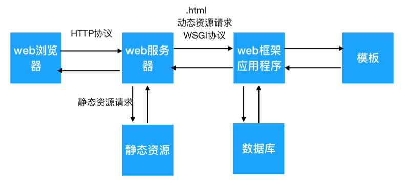

1 框架相关概念
1.1 学习目标
- 能够说怎样的资源是静态资源
- 能够说怎样的资源是动态资源
- 能够说出web服务器的作用
1.2 框架和web服务器的关系
前面已经学习过web服务器,我么知道web服务器主要是接收用户浏览器的请求,根据用户的资源请求返回不同的资源.

2. 重要概念
2.1 静态资源
一旦准备好资源,不在需要经常变化的资源.由于该资源不需要经常变化,所以可以提前准备.
比如 png/jpg/css/js等文件
2.2 动态资源
和静态资源相反, 这种资源会经常变化.比如,我们要编写一个电商网站,我们无法预测用户在浏览商品时选择什么样的条件.
根据用户选择条件不同, 我们给用户提供可供选择的商品就不同.
这种资源无法提前准备.
2.3 模板文件
在用户搜索各种商品的时候,大家是否发现 虽然大家的条件不同,但是显示商品的网页中除了那些商品信息 整个网页的结构/布局几乎是一模一样的.
而模板文件就是网页中通用的结构构成的一个页面.这个页面中不含有任何用户需要查看的数据, 当用户查询数据的时候会将最终的结果放到模板中形成用户真正需要的页面.
这就好比,生活中一个毛坯房可以装饰上不同的风格.
我们把模板文件转化为 用户真正看到的网页的过程就称为模板替换.
3. 通信规范
服务器和浏览器之间通信使用HTTP协议
同理, 框架和web服务器之间进行通信也需要一个协议
为了简单明了,我们自行写一个简单的协议:
web服务器在接收到浏览器的动态资源请求的时候 会将请求报文请求切割拆分为键值对放到一个字典中
web服务器调用框架提供的方法执行框架的功能 并且传给框架一个字典
框架通过字典取出 用户请求 根据请求产生处理状态/响应头信息/响应体
- 框架通过返回值将 处理状态/响应头信息/响应体给服务器,完成一次动态资源请求的过程
3.1 总结
- 静态资源 可以提前准备的、必须要经常发生变化的
- 动态资源 不能提前准备需要根据实际情况完成对应的操作才能产生的资源
- web服务器的作用 主要和用户浏览器进行交互，并且在web框架和web浏览器之间进行数据的中转